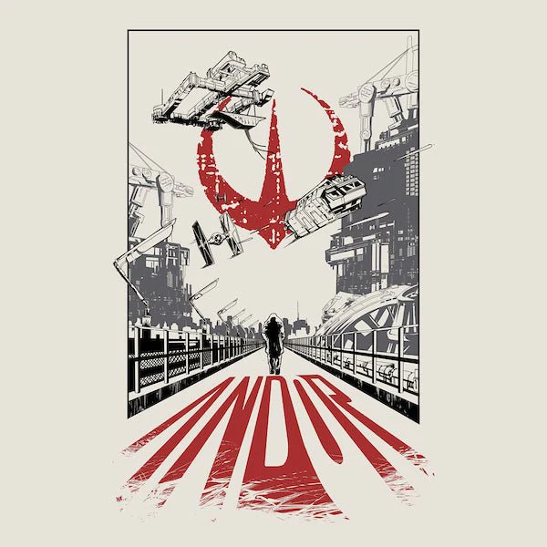
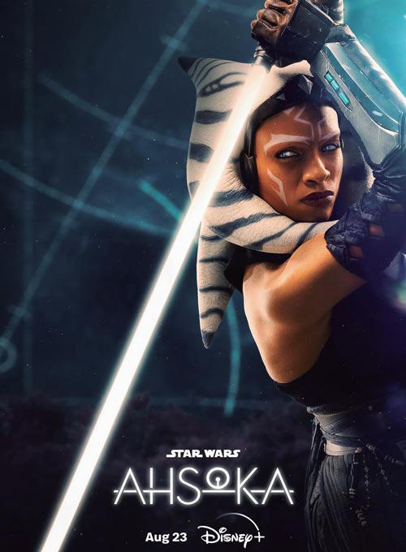
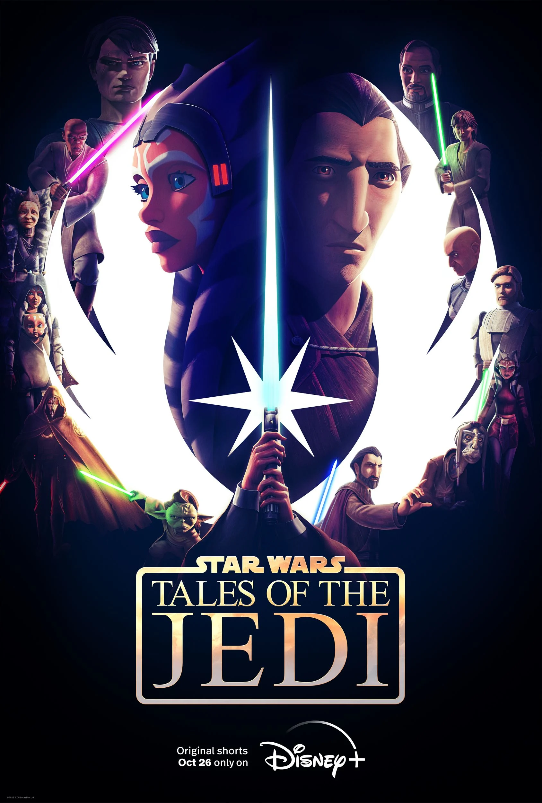

Séries da Galáxia
Live-Action

The Mandalorian
Um caçador de recompensas solitário protege uma criança misteriosa nos confins da galáxia.

Andor
A jornada de Cassian Andor para se tornar um herói rebelde durante os anos de formação da Rebelião.

Ahsoka
A antiga Cavaleira Jedi Ahsoka Tano investiga uma ameaça emergente a uma galáxia vulnerável.

Obi-Wan Kenobi
Um Mestre Jedi em exílio é forçado a uma nova missão para proteger a jovem Princesa Leia do Império.
Animação

The Clone Wars
A grande guerra entre a República e os Separatistas, focando nas provações de Anakin, Obi-Wan e Ahsoka.

Rebels
Um grupo de rebeldes a bordo da nave Ghost luta contra o Império, acendendo a faísca da Rebelião.

The Bad Batch
Um esquadrão de elite de clones experimentais navega por uma galáxia em mudança logo após a Guerra dos Clones.

Histórias dos Jedi
Uma coleção de curtas animados que seguem as jornadas de Ahsoka Tano e do Conde Dookan.